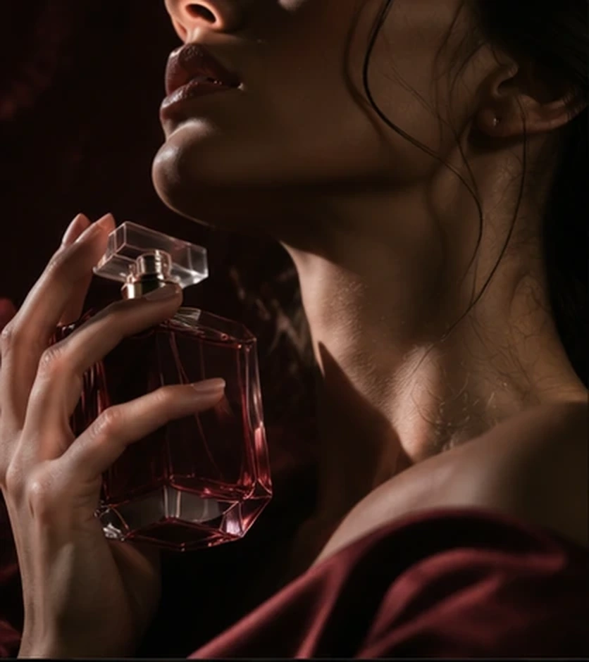

Лав Парфюм
Парфюмерный каталог с поиском, карточками ароматов и инструментом подбора.

О проекте
Задача,
дизайн и реализация.
Задача
Объединить коллекцию ароматов в едином каталоге, где посетитель может найти нужный бренд, изучить композицию и выбрать подходящий вариант без длительной переписки. При этом важно сохранить индивидуальный визуальный характер магазина.
Решение
Разработал каталог с бордовыми акцентами и спокойной типографикой. Организовал поиск, категории и карточки с описаниями ароматов, предусмотрел подбор и путь к оформлению заявки. Интерфейс адаптирован под мобильные экраны.
Интерфейс проекта

Функциональность
и детали проекта.
- Поиск и категории
Навигация по коллекции и поиск нужного аромата.
- Карточки ароматов
Описание композиции и основные сведения о каждой позиции.
- Подбор и заявки
Подбор аромата и оформление заявки.
- Адаптация под телефон
Удобная сетка и управление на небольших экранах.
Клиентский проект. Здесь представлены интерфейс и реализованный функционал.